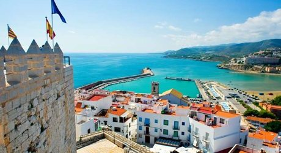
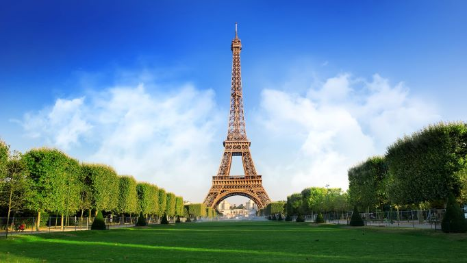
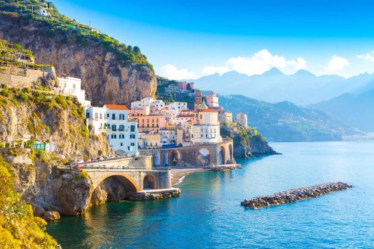
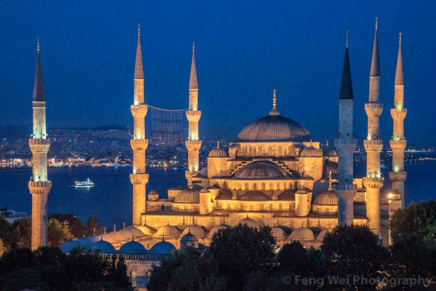

One thing Spain is known for is its perfect weather. With an abundance of sizzling, sunny days and decent winter weather, there’s no wonder so many travellers are attracted to Spain. The country’s fantastic weather also means that a trip at any time of the year is always on the horizon.
To download your ticket click here

If you are planning your next trip abroad, France should be one of the top countries on your list. Known for its legendary Eiffel Tower and the language of love, it is one of the top destinations in the world. There are undoubtedly hundreds of things to do there, so you will never get bored.
To download your ticket click here

Italy certainly does have much to offer: spectacular cities, ancient ruins, wonderful museums, soaring mountains, great beaches, and beautiful natural scenery. ... One of the great joys of traveling through Italy is discovering firsthand that it is, indeed, a dream destination.
To download your ticket click here

Turkey is famous for its incredible wonders like Capadoccia or the Pamukkale cotton castle, for their kebabs and tasty food, for its incredible bazaars, and of course, another of the things Turkey is known for is its geographical location.
To download your ticket click here
